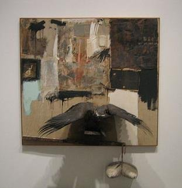

Canyon
Robert Rauschenberg · 1959 · Combine: oil, pencil, paper, metal, photograph, fabric, wood, canvas, buttons, mirror, taxidermied eagle, cardboard, pillow, paint tube and other materials · Museum of Modern Art, New York
In copyright. Look and learn: shown for study, not for download.
The stuffed golden eagle was given to Rauschenberg by Sari Dienes, who had found it on the street among the discarded belongings of a neighbor who had recently died. Because of the eagle, United States law forbade the work's sale. After the death of its owner, Ileana Sonnabend, the IRS valued it at $65 million and charged her heirs $29.2 million in tax, while the estate's appraisers valued it at $0. The heirs gave it to the Museum of Modern Art in 2012.